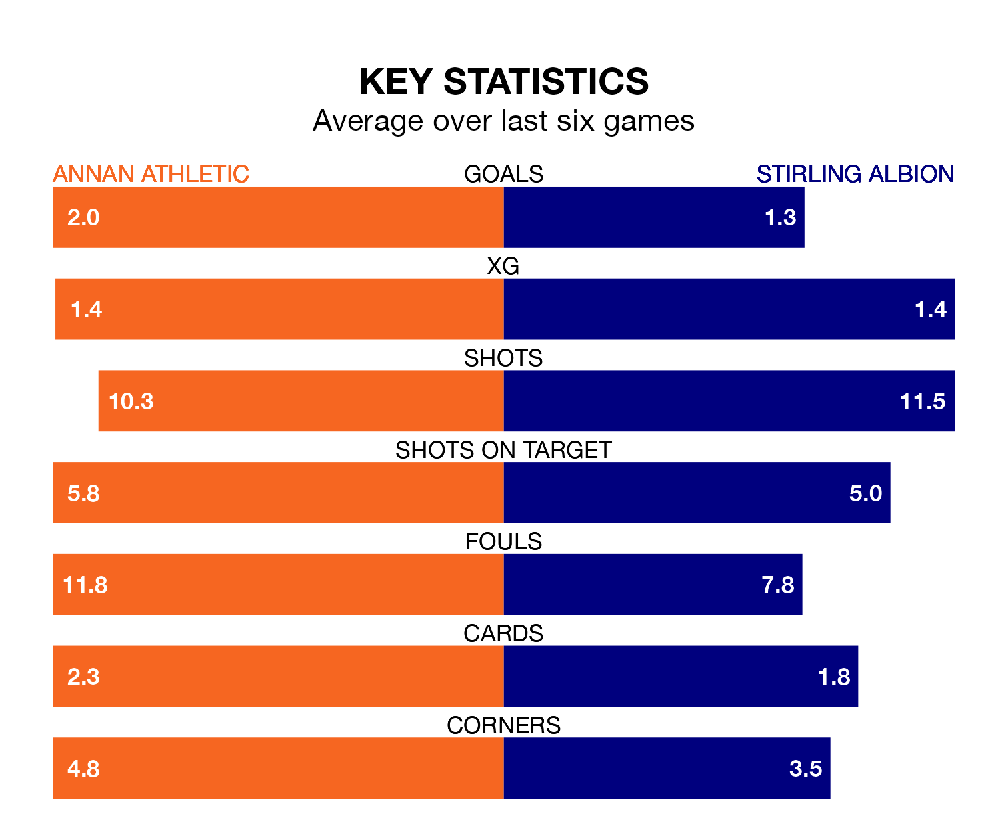

Saturday's match at Galabank sees two relegation candidates play each other, as ninth-ranked Annan Athletic host eighth-placed Stirling Albion.
Annan have picked up 19 points from their first 19 League One games, with four wins and seven draws.
That is seven points less than the Binos have collected, having won seven and drawn five.
In Blair Currie, Stirling can rely on one of the league's safest pair of hands. He has kept six clean sheets in his 23 appearances this season, and only one other 'keeper – Falkirk's Sam Long – has been able to prevent the opposition scoring on more occasions in League One.
In Annan's net, Greg Fleming has one clean sheet in 20 games. He has conceded a goal every 43 minutes, 40% more often than the 59 minutes between goals for Currie.
In the last 10 years, Annan and Stirling have played each other on 32 occasions. Annan won nine of them, Stirling 14, and they drew nine times.
On average, the Galabankies scored 1.5 goals and the Binos 1.5 in those matches.
Their last meeting was on December 16, when they played out a 1-1 draw.
With 23 goals in 23 games so far this season, Albion are the league's lowest scorers with 1.0 goals per game. And they are conceding more than average, letting in 37 goals at a rate of 1.6 per game.
Athletic are also below average scorers, with 1.4 goals per game, compared to a league average of 1.5. They have conceded 2.0 goals per game.
The Galabankies are in mixed form in League One, with two wins and two draws from their last six games.
With two wins and a draw over that period, the Binos' form is slightly worse – they have taken seven points from 18, compared to the hosts' eight.
Annan's last match was on Tuesday, a 2-1 loss against Alloa Athletic, with Aidan Smith getting the goal for the Galabankies.
Stirling lost 1-0 against Alloa Athletic last time out, on February 10.
Updated: 12:06 (UTC), 15/02/24